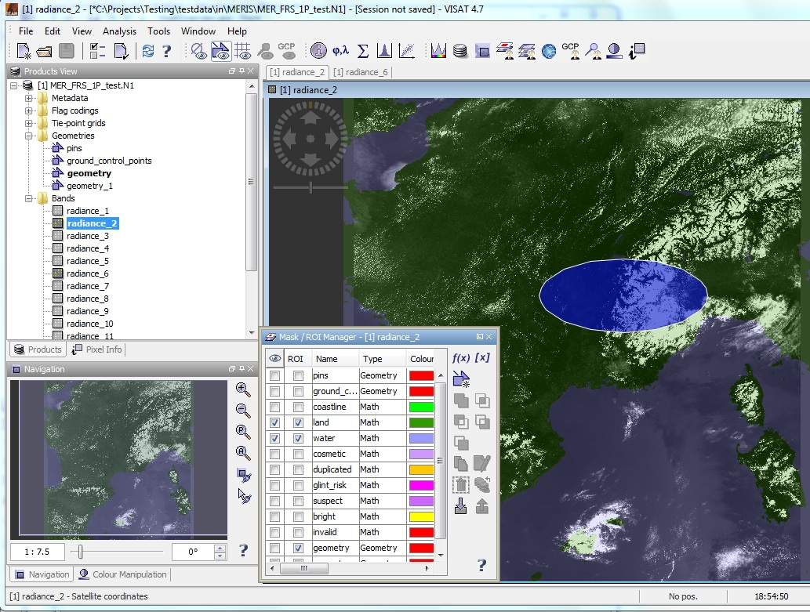
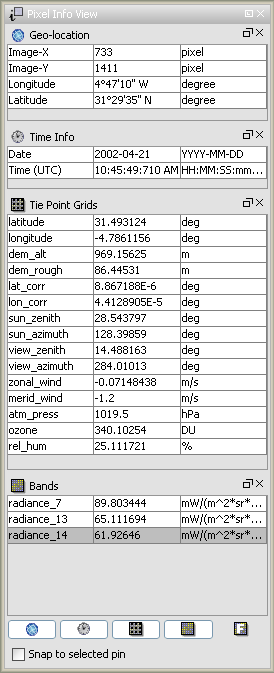

| VISAT's Product Browser |
|
If you create a new, open or import an existing data product, VISAT will put it into it's open product list. The product list is a tree view with up to four root nodes for each open product:
You can quickly open an Image View for a band or tie-point grid by double-clicking on an item of the expanded product root nodes. Accordingly a metadata view is opened if you click an item the flag coding or metadata nodes. Please also refer to the Navigation Window and the the Zoom and Panner tools.

The information concerning each pixel can be analysed interactively in the pixel information view.
If you click on the tab 'Pixel View' on the left side of the VISAT window, pixel information will be displayed while you move the mouse over the band image view.

You can un-dock each frame using the floating-button ( ),
and dock it back to the Pixel View by using the close-button ()
in the header bar. If it is already docked and the close-button is used the corresponding frame is hidden.
In floating mode the docking-button () lets the window dock to
the main frame of VISAT as any other tool view.
),
and dock it back to the Pixel View by using the close-button ()
in the header bar. If it is already docked and the close-button is used the corresponding frame is hidden.
In floating mode the docking-button () lets the window dock to
the main frame of VISAT as any other tool view.
The buttons at the bottom of the Pixel View switch the visibility state of the corresponding frame, regardless if its currently floating or docked.
The informations displayed belong to the current image pixel beneath the mouse pointer:
If a pin is selected in the current image view you can select Snap to selected pin in order to "freeze" the pixel info to the position of the currently selected pin.
Note: In the Preferences Dialog you can deselect the option that only pixel values of displayed bands are shown.